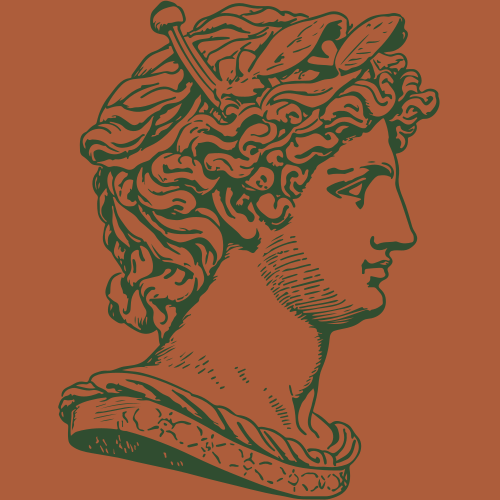
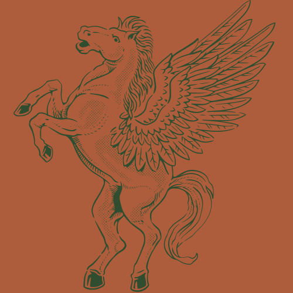
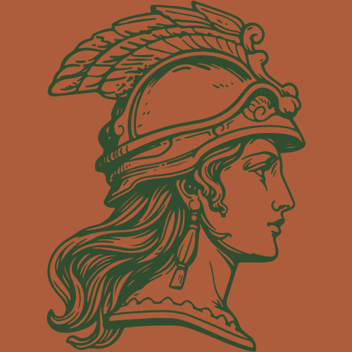
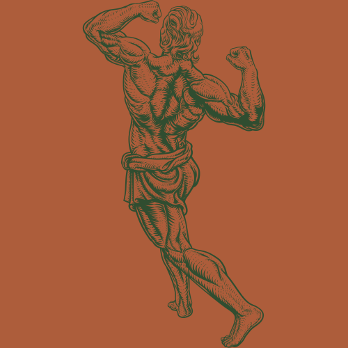

The history of Medusa, at least to us, is long and developed over time.
Here, I want to talk about Medusa's life and the lives of those around her.
To start, it's important to understand who the major players were in Medusa's life.
| Who? | What? | |
|---|---|---|
| Medusa | The mortal Gorgon | |
| Perseus | The slayer of Medusa |  |
| Chrysaor and Pegasus | The sons that sprang from Medusa's blood |  |
| Athena | Turned Medusa's hair into snakes |  |
| Hercules | Used Medusa's hair to ward of enemies |  |
| Poseidon | The father of Medusa's sons, afterward causing Athena to curse her |
Medusa is described as one of the three Gorgons in Greek Mythology.
Traditionally pictured as the creature with living snakes for hair, she was pictured
as a vile creature. Of the three sister Gorgons, Medusa was the only mortal.
Around 5th century B.C., Greek artists began depicting Medusa as beautiful and terrifying,
a motif which many women identify with in contemporary interpretations.
Eventually, when a later version of Roman mythology emerged, the story we all know of Medusa
was developed. Medusa, originally a beautiful woman, had relations with Poseidon in a temple of Athena.
Athena punished Medusa by turning her hair into snakes. Eventually, Perseus comes to behead Medusa and use her powers.
This points both to her historic portrayal as both an aggressor and a victim.
Perseus was not alone in this feat, and received help from others gods. He received a mirror shield from
Athena, sandals with wings from Hermes, a sword from Hephaestus, and Hade's helm of invisibility.
When Medusa was killed, she was pregnant by Poseidon. From her blood sprang Pegasus (speaks for itself) and Chrysaor,
a giant with a golden sword.
It is thought Medusa's life manifested in the form of a cultus mask, as
her abundance surrounds her head in all or most aspects of her life.